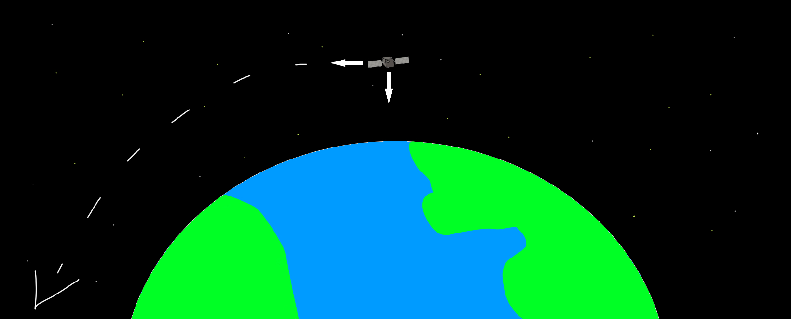

When you ask most people how a satellite stays in space, they say it's because there is no gravity to pull it down. Well... no. Gravity doesn't just go away once you leave the atmosphere—it's still very real. The force of gravity equals the gravitational constant times the product of the planet's mass and your mass, divided by the square of the distance between you and the planet (F = G·M·m / r²). In layman's terms, no matter how far you get from Earth, there will always be a force pulling you toward it. Distance only changes the strength of that force: the farther away you are, the weaker it gets.
So if gravity is pulling them down, how come satellites stay up in space? Satellites, believe it or not, are actually falling toward Earth, but they're also moving sideways—parallel to Earth's surface—so fast that as they fall, they keep missing the planet. This balance between Earth's gravity and their sideways velocity lets them circle the planet. Below is my best attempt at drawing this phenomenon.
Most satellites we've sent into space (including the International Space Station) operate in low Earth orbit (LEO). These orbits experience atmospheric drag—a force acting opposite to the satellite's motion because of Earth's thin upper atmosphere—and require breakneck speeds to stay up. For reference, the ISS travels at 17,500 mph, or about 28 times the speed of sound!!!
Have you ever wondered how the meteorologist on the news always seems to know if rain is coming, a hurricane is brewing, or some other bizarre weather event is headed our way? Say hello to the geosynchronous weather satellite — a meteorologist's best friend! These satellites appear to stay in the same position above Earth. Wait, how is that possible? I just told you satellites are always moving parallel to Earth's surface, so they don't fall straight down. Well, the Earth is rotating on its axis. So… if a satellite matches the speed of Earth's rotation (i.e., has the same orbital period), it will seem to stay in the same spot — but that's only true relative to Earth's rotation.
Another, more complex orbit is the Sun-synchronous orbit. These orbits travel around Earth so they line up with the Sun at the same point every revolution. As the year goes on, the Sun's position in the sky shifts slightly day to day—if you look up at the Sun (which I do not recommend) at 12:00 pm today, then look at that same spot tomorrow, the Sun won't be there. Sun-synchronous orbits are arranged so they stay lined up with the Sun every day.